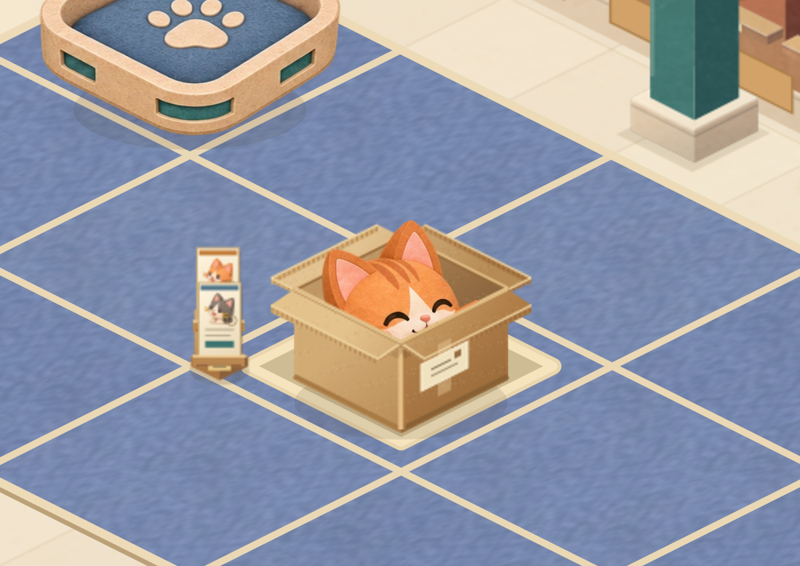
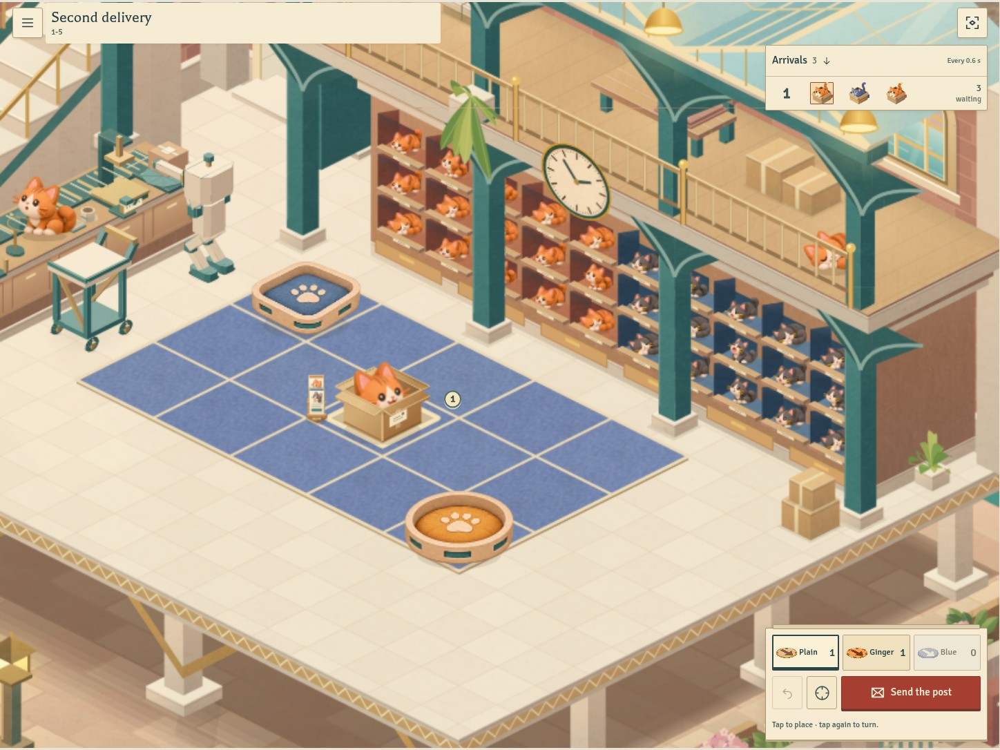
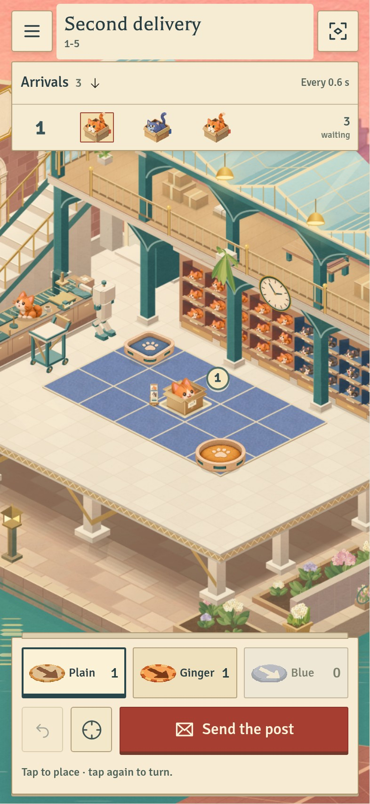

CATS BY POST · SORTING OFFICEA little rack of postal tickets
The next delivery stays in its cardboard box. Later cats are pictured on cream paper tickets, held in a wooden rack at the corner of the hatch. The lower ticket is next; each ticket leaves when its cat starts to emerge.

The portraits have paper borders, postal markings and supporting slots. Single-cat launches have no holder.
The hatch number now sits beside the box, leaving the cat's face visible.
The same delivery at a phone viewport.All fifteen original Office levels retain their rules and timing. This remains a separate, unmerged game review. Browser checks used Linux Chromium and emulated phone sizes; physical Safari remains for device review.
Previous movement and furniture comparison · Offline study · Source